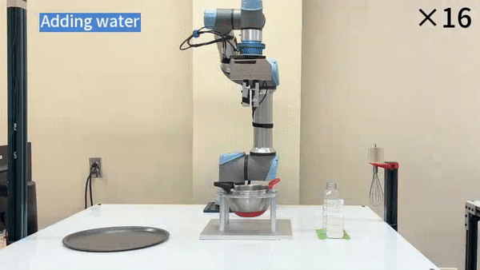
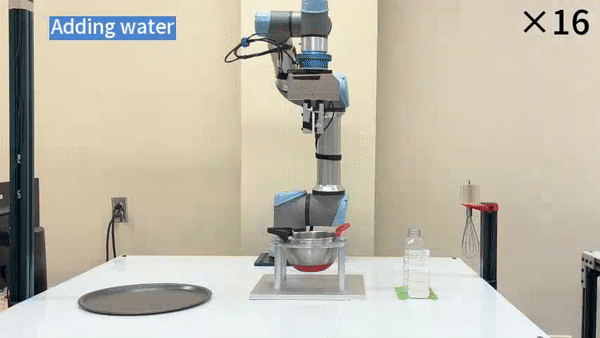
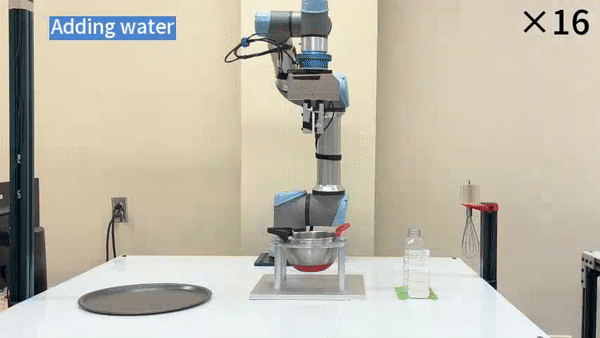
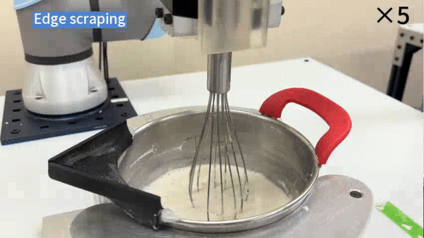
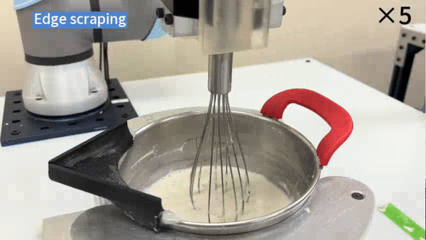

Preparation Phase
 

Cooking robots have long been desired by the commercial market, while the technical challenge is significant. A major difficulty comes from the demand of perceiving and handling liquid with different properties. This paper presents a robot system that mixes batter and makes pancakes out of it, where understanding and handling the viscous liquid is an essential component. The system integrates advanced sensory and control algorithms to autonomously stir flour and water to achieve the desired batter uniformity, estimate the batter’s properties such as the water-flour ratio and liquid level, as well as perform precise manipulations to pour the batter into any specified shape. Experimental results show the system’s capability to always produce batter of desired uniformity, estimate water-flour ratio and liquid level precisely and accurately pour it into complex shapes. This research marks a significant stride towards automating culinary pro- cesses, showcasing the potential for robots to assist in domestic kitchens and revolutionize the process of food preparation.
In the preparation phase, the robot grabs the whisk and then measures the precise position and size of the mixing bowl. Then follows the preliminary stir phase and perceptive stirring until the batter is uniform. Then the robot measures batter’s liquid level and water-flour ratio. For pouring, we first plan the trajectory of the robot, then use a stroke control model with liquid level and water-flour ratio as input to regulate the robot’s moving speed to maintain the desired stroke width.

 

Our system uses a 6-DoF UR5e Robot arm by Universal Robotics. This arm is equipped with a WSG-50 2-fingered gripper from Weiss Robotics with aluminum fingers. Attached to the robot’s wrist is a 6-axis NRS-6050-D80 F/T sensor from Nordbo Robotics with a sampling rate of 1000 Hz. To ensure stability during mixing, we mount the mixing bowl on a holder and place a shelf equipped with a 1920x1080 resolution RGB camera above it. For the stirring experiments, we utilized a default small bowl with an 8.3 cm radius and 1100 ml volume, as well as a large bowl with a 10.5 cm radius and 2200 ml volume.
Water-flour ratio and liquid level estimation result of 15 batches of batter (10 in small bowl, 5 in large bowl)
Our round shape pancake pouring results using batter with different water-flour ratios. Our method pours pancakes with more accurate sizes than the baseline method.
@misc{luo2024intelligentroboticperceptivepancake,
title={An Intelligent Robotic System for Perceptive Pancake Batter Stirring and Precise Pouring},
author={Xinyuan Luo and Shengmiao Jin and Hung-Jui Huang and Wenzhen Yuan},
year={2024},
eprint={2407.01755},
archivePrefix={arXiv},
primaryClass={cs.RO},
url={https://arxiv.org/abs/2407.01755},
}